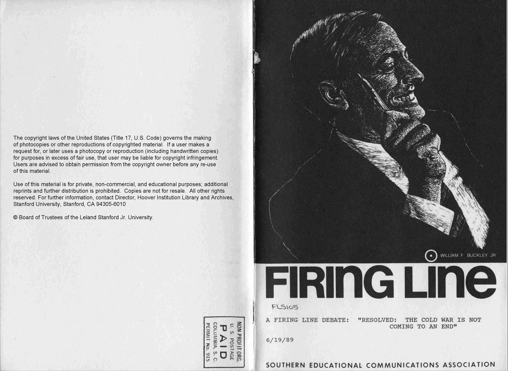

This video is an episode of televised debate show, Firing Line, involving conservative pundit William Buckley and other prominent people in politics. The subject is the topic, “The Cold War is Not Coming to an End. The debate itself is very lighthearted, with the host frequently making jokes about the candidates and is clearly intended for a wider audience rather than just an academic and intellectual one. This video centers Buckley, as his presence dominates the debate, and is the one who delivers the closing remarks. Its inclusion in the Hoover Instutition Library and Archives showcases the conservative movement during the Cold War, but also creates a larger image for Buckley and makes him seem more relevant and prominent than he may have been at the time. This creates a narrative in which William F Buckley is more prominent, and his ideas and rhetoric are more important than they may have been, which therefore influences an ideology in which conservatives are seen as rational and evidence based, giving the Hoover Institution credibility.
Back